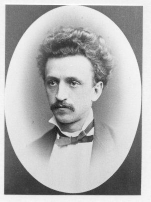
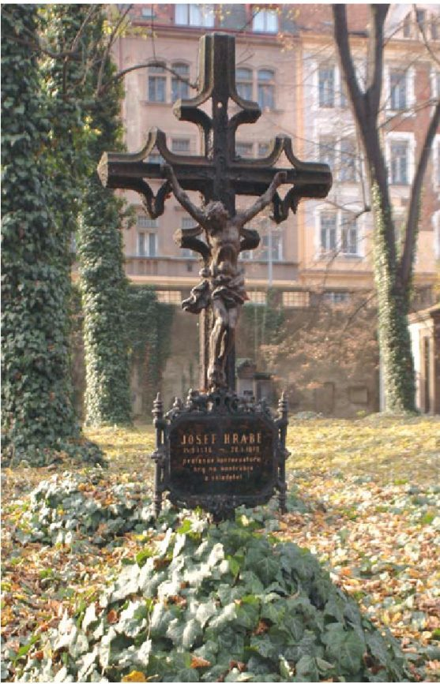

Hrabien suku Prahassa
Isoisoisä Carl (Karel) Hrabie syntyi ja kasvoi Prahassa. Hänen isänsä Josef oli kontrabassonsoiton professori Prahan konservatoriossa.
Josef
Kontrabasisti ja säveltäjä. Soitti Säätyteatterissa (Stavovské divadlo) ennen professuuria. Opetti konservatoriossa, joka toimi silloin dominikaaniluostarissa Jiljin kirkon vieressä. Kuoli 1869 perheen asuessa Dražického náměstíllä. Haudattu Malostranský hřbitoville.

Carl
Carl Franz, syntyi 26.4.1852 Řetězová-kadulla Vanhassakaupungissa ja kastettiin 2.5.1852 Jiljin kirkossa (kastemerkintä alla). Äiti Barbara o.s. Soukup. Kasvoi Malá Stranan taloissa, joista osa on matkan majapaikan naapurissa.
Ovenec
Sekä Josefin että Barbaran isät olivat talollisia Vorder-Owenetzissa (Přední Ovenec). Josefin äiti Magdalena oli samasta kylästä, ja Barbaran äiti Katharina viereisestä Holešovicesta. Se oli kylä Prahan pohjoispuolella, nykyisin Bubenečin kaupunginosaa Letnán ja Stromovkan puiston kupeessa.
Chvaly
Josefin isoisä toimi Chvalyn alueella voudin/kylänvanhimman tapaisessa tehtävässä. Selvitettävää: Chvalský zámek ja Zámek Čertousy.
Carlin kastemerkintä ✓
Jiljin seurakunnan kastekirja 1850-luvulta, Prahan kaupunginarkisto (AHMP). Napauta kuvaa, niin se aukeaa isona.
- Syntynyt
- 26. huhtikuuta 1852
- Kastettu
- 2. toukokuuta 1852
- Nimi
- Carl Franz, poika, katolinen, avioliitosta
- Kastaja
- Wilhelm Kabesch, apupappi (Coop.)
- Isä
- Josef Hrabě, Professor am Conservatorium der Musik zu Prag
- Isän vanhemmat
- Josef Hrabě, talonomistaja (Hausbesitzer?) Vorder-Owenetzissa, ja Magdalena o.s. Nowak, Vorder-Owenetzista
- Äiti
- Barbara, Thomas Soukupin tytär
- Äidin vanhemmat
- Thomas Soukup, maanomistaja (Grundbesitzer) Vorder-Owenetzissa, ja Katharina o.s. Bukowsky, Groß-Holeschowitzista (Holešovice)
Luettu käsialasta. (?) = epävarma lukutapa.
Asuinpaikat
Etsi talon seinästä punainen kilpi = číslo popisné eli talon rekisterinumero. Sama numero kuin 1800-luvun asiakirjoissa. Sininen kilpi on nykyinen katunumero.
Selvitettävää paikan päällä
- Josefin hauta: kuvaa hautakivi ja ympäristö, kirjaa tekstit.
- Jiljin kirkko: kuvaa kastemalja, ja kysy konservatorion historiasta.
- Vorder-Owenetz / Přední Ovenec (Bubeneč): Hraběn ja Soukupin isovanhempien kotikylä. Onko vanhaa kylänraittia jäljellä?
- Prahan linna: oliko Hrabe/Hrabie-nimisiä linnan palveluksessa?
- Nimi Hrabe ~ tšekin hrabě (kreivi)?
- Vanhankaupungin osoite I/32 tai 36 (1863) on purettu. Sijaitsi mahdollisesti juutalaiskorttelin lähellä.
Yhteiset materiaalit, joita ei ole sidottu aikaan tai paikkaan. Napauta avataksesi isona.
Lennot
- Tapaaminen
- to klo 15.30, OP Lounge by Aspire, Helsinki-Vantaa
- Meno
- AY1223 to
HEL 17.35 → PRG 18.50 (T2) - Paluu
- AY1222 su
PRG 11.40 → HEL 14.55 (T2)
Aikaero: Praha on tunnin jäljessä Suomesta.
Majoitus
Residence U Mecenáše
Malostranské náměstí 10, Praha 1 – Malá Strana
Taksikuskille: „Malostranské náměstí deset, prosím.“
Käytännön vinkit
- Raha: Tšekin koruna (Kč, CZK). Kortti käy lähes kaikkialla. Jos maksupääte tai automaatti tarjoaa muuntoa euroiksi, valitse aina korunat. Vältä Euronet-automaatteja.
- Joukkoliikenne: liput PID Lítačka -sovelluksesta. Aktivoi lippu ennen kyytiin nousua, sillä tarkastuksia on.
- Taksi: Bolt tai Uber. Älä ota taksia kadulta.
- Juomaraha: noin 10 %, ravintolassa tavallisesti pyöristäen.
- Pimeys: marraskuussa hämärtyy jo klo 16–16.30. Ulkokohteet kannattaa käydä päivällä.
- Hätänumero: 112
Tšekkiä taskuun
- Dobrý den
- Hyvää päivää
- Děkuji
- Kiitos
- Prosím
- Ole hyvä / pyytäisin
- Pivo, tři
- Olutta, kolme
- Na zdraví!
- Kippis!
- Zaplatím
- Maksan (lasku)
- Hřbitov
- Hautausmaa
- Hrob
- Hauta
- Pradědeček
- Isoisoisä